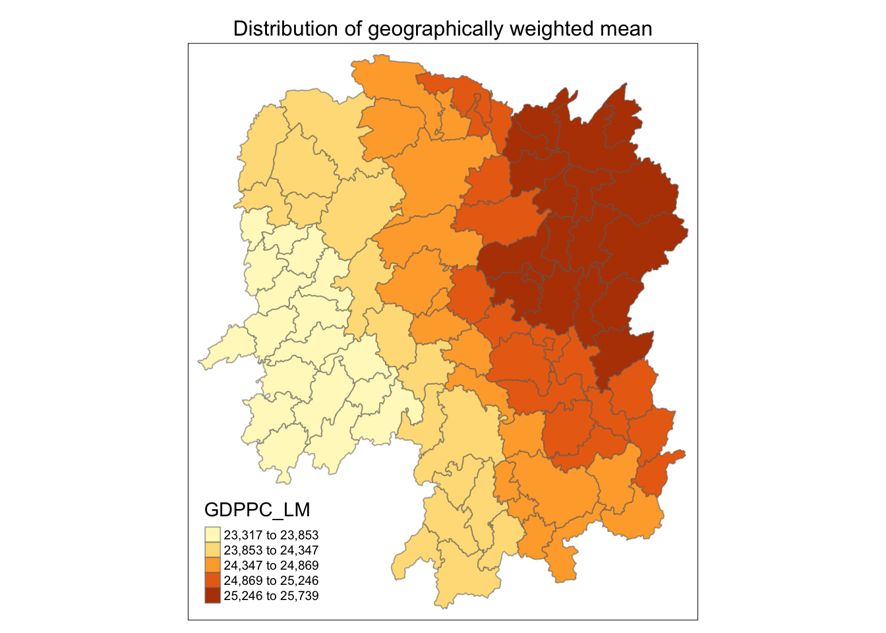
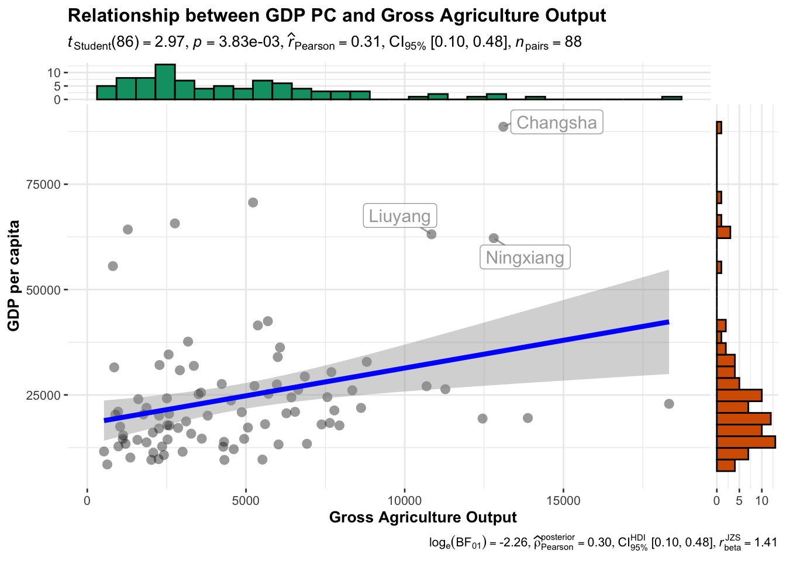
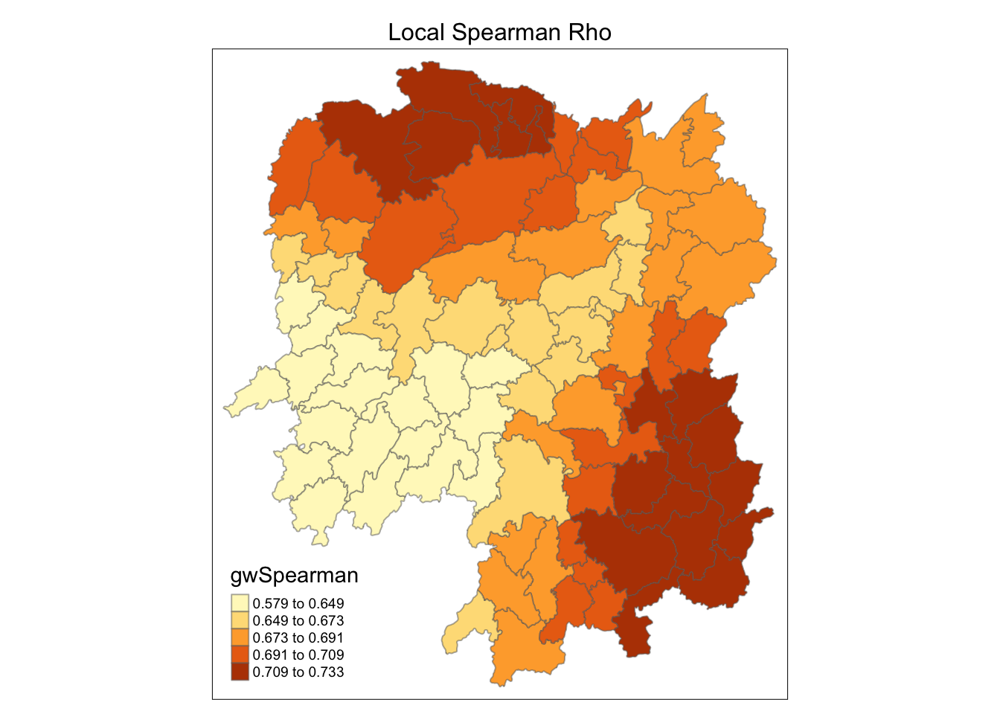

pacman::p_load(sf, ggstatsplot, tmap, tidyverse, knitr, GWmodel)In-class Ex 4
Overview
In this in-class exercise, we will use R’s GWmodel package for spatial weight analysis. One key feature we will explore is the geographically weighted summary statistics.
1. Importing & Transforming Data
Two datasets will be used in this in-class exercise:
- Hunan County Boundary Layer: A geospatial dataset in ESRI shapefile format.
- Hunan_2012.csv: A CSV file containing selected local development indicators for Hunan in 2012.
In this in-class exercise, there’s no need to convert the Geographical Coordinate System to a projected coordinate system. The package used for calculating distances between neighbors automatically converts the Geographical Coordinate System into kilometers.
hunan_sf <- st_read(dsn = "data/geospatial",
layer = "Hunan") Reading layer `Hunan' from data source
`/Users/stephentay/stephentay/ISSS626-Geospatial-Analytics/In-class_Ex/In-class_Ex04/data/geospatial'
using driver `ESRI Shapefile'
Simple feature collection with 88 features and 7 fields
Geometry type: POLYGON
Dimension: XY
Bounding box: xmin: 108.7831 ymin: 24.6342 xmax: 114.2544 ymax: 30.12812
Geodetic CRS: WGS 84hunan2012 <- read_csv("data/aspatial/Hunan_2012.csv")
glimpse(hunan2012)Rows: 88
Columns: 29
$ County <chr> "Anhua", "Anren", "Anxiang", "Baojing", "Chaling", "Changn…
$ City <chr> "Yiyang", "Chenzhou", "Changde", "Hunan West", "Zhuzhou", …
$ avg_wage <dbl> 30544, 28058, 31935, 30843, 31251, 28518, 54540, 28597, 33…
$ deposite <dbl> 10967.0, 4598.9, 5517.2, 2250.0, 8241.4, 10860.0, 24332.0,…
$ FAI <dbl> 6831.7, 6386.1, 3541.0, 1005.4, 6508.4, 7920.0, 33624.0, 1…
$ Gov_Rev <dbl> 456.72, 220.57, 243.64, 192.59, 620.19, 769.86, 5350.00, 1…
$ Gov_Exp <dbl> 2703.0, 1454.7, 1779.5, 1379.1, 1947.0, 2631.6, 7885.5, 11…
$ GDP <dbl> 13225.0, 4941.2, 12482.0, 4087.9, 11585.0, 19886.0, 88009.…
$ GDPPC <dbl> 14567, 12761, 23667, 14563, 20078, 24418, 88656, 10132, 17…
$ GIO <dbl> 9276.90, 4189.20, 5108.90, 3623.50, 9157.70, 37392.00, 513…
$ Loan <dbl> 3954.90, 2555.30, 2806.90, 1253.70, 4287.40, 4242.80, 4053…
$ NIPCR <dbl> 3528.3, 3271.8, 7693.7, 4191.3, 3887.7, 9528.0, 17070.0, 3…
$ Bed <dbl> 2718, 970, 1931, 927, 1449, 3605, 3310, 582, 2170, 2179, 1…
$ Emp <dbl> 494.310, 290.820, 336.390, 195.170, 330.290, 548.610, 670.…
$ EmpR <dbl> 441.4, 255.4, 270.5, 145.6, 299.0, 415.1, 452.0, 127.6, 21…
$ EmpRT <dbl> 338.0, 99.4, 205.9, 116.4, 154.0, 273.7, 219.4, 94.4, 174.…
$ Pri_Stu <dbl> 54.175, 33.171, 19.584, 19.249, 33.906, 81.831, 59.151, 18…
$ Sec_Stu <dbl> 32.830, 17.505, 17.819, 11.831, 20.548, 44.485, 39.685, 7.…
$ Household <dbl> 290.4, 104.6, 148.1, 73.2, 148.7, 211.2, 300.3, 76.1, 139.…
$ Household_R <dbl> 234.5, 121.9, 135.4, 69.9, 139.4, 211.7, 248.4, 59.6, 110.…
$ NOIP <dbl> 101, 34, 53, 18, 106, 115, 214, 17, 55, 70, 44, 84, 74, 17…
$ Pop_R <dbl> 670.3, 243.2, 346.0, 184.1, 301.6, 448.2, 475.1, 189.6, 31…
$ RSCG <dbl> 5760.60, 2386.40, 3957.90, 768.04, 4009.50, 5220.40, 22604…
$ Pop_T <dbl> 910.8, 388.7, 528.3, 281.3, 578.4, 816.3, 998.6, 256.7, 45…
$ Agri <dbl> 4942.253, 2357.764, 4524.410, 1118.561, 3793.550, 6430.782…
$ Service <dbl> 5414.5, 3814.1, 14100.0, 541.8, 5444.0, 13074.6, 17726.6, …
$ Disp_Inc <dbl> 12373, 16072, 16610, 13455, 20461, 20868, 183252, 12379, 1…
$ RORP <dbl> 0.7359464, 0.6256753, 0.6549309, 0.6544614, 0.5214385, 0.5…
$ ROREmp <dbl> 0.8929619, 0.8782065, 0.8041262, 0.7460163, 0.9052651, 0.7…Some development indicators from hunan2012 are needed to be added into hunan’s sf dataframe. The datasets are joined by County. You need to select the variables of interest in your dataset and drop all others before you start your analysis.
hunan_sf <- left_join(hunan_sf, hunan2012, by = "County") %>%
select(1:3, 7, 15, 16, 31, 32)
glimpse(hunan_sf)Rows: 88
Columns: 9
$ NAME_2 <chr> "Changde", "Changde", "Changde", "Changde", "Changde", "Chang…
$ ID_3 <int> 21098, 21100, 21101, 21102, 21103, 21104, 21109, 21110, 21111…
$ NAME_3 <chr> "Anxiang", "Hanshou", "Jinshi", "Li", "Linli", "Shimen", "Liu…
$ County <chr> "Anxiang", "Hanshou", "Jinshi", "Li", "Linli", "Shimen", "Liu…
$ GDPPC <dbl> 23667, 20981, 34592, 24473, 25554, 27137, 63118, 62202, 70666…
$ GIO <dbl> 5108.9, 13491.0, 10935.0, 18402.0, 8214.0, 17795.0, 99254.0, …
$ Agri <dbl> 4524.410, 6545.350, 2562.460, 7562.340, 3583.910, 5266.510, 1…
$ Service <dbl> 14100.0, 17727.0, 7525.0, 53160.0, 7031.0, 6981.0, 26617.8, 1…
$ geometry <POLYGON [°]> POLYGON ((112.0625 29.75523..., POLYGON ((112.2288 29…The GWmodel package is currently designed to work with the older sp format rather than the newer sf format for handling spatial data in R. Thus, we need to convert it to the sp format.
hunan_sp <- hunan_sf %>%
as_Spatial()2. Geographically Weighted Summary Statistics with Adaptive Bandwidth
We need to determine adapative bandwidth. There are two methods:
This is based on regression. GDPPC is the dependent variable, and 1 as the arbitary independent variable. Since we are using Geographical Coordinate System which is in degre, we set longlat = TRUE, and it will calculate great circle distances in kilometer.
bw_CV <- bw.gwr(GDPPC ~ 1,
data = hunan_sp,
approach = "CV",
adaptive = TRUE,
kernel = "bisquare",
longlat = TRUE)Adaptive bandwidth: 62 CV score: 15515442343
Adaptive bandwidth: 46 CV score: 14937956887
Adaptive bandwidth: 36 CV score: 14408561608
Adaptive bandwidth: 29 CV score: 14198527496
Adaptive bandwidth: 26 CV score: 13898800611
Adaptive bandwidth: 22 CV score: 13662299974
Adaptive bandwidth: 22 CV score: 13662299974 This is the number of nearest neighbours that you should choose.
bw_CV[1] 22Choose the adapative bandwidth with the least AIC value.
bw_AIC <- bw.gwr(GDPPC ~ 1,
data = hunan_sp,
approach = "AIC",
adaptive = TRUE,
kernel = "bisquare",
longlat = TRUE)Adaptive bandwidth (number of nearest neighbours): 62 AICc value: 1923.156
Adaptive bandwidth (number of nearest neighbours): 46 AICc value: 1920.469
Adaptive bandwidth (number of nearest neighbours): 36 AICc value: 1917.324
Adaptive bandwidth (number of nearest neighbours): 29 AICc value: 1916.661
Adaptive bandwidth (number of nearest neighbours): 26 AICc value: 1914.897
Adaptive bandwidth (number of nearest neighbours): 22 AICc value: 1914.045
Adaptive bandwidth (number of nearest neighbours): 22 AICc value: 1914.045 This is the number of nearest neighbours that you should choose, which is the same result from the cross-validation method. Sometimes the result may differ, both methods are acceptable.
bw_AIC[1] 223. Geographically Weighted Summary Statistics with Fixed Bandwidth
We need to determine fixed bandwidth.
bw_CV <- bw.gwr(GDPPC ~ 1,
data = hunan_sp,
approach = "CV",
adaptive = FALSE,
kernel = "bisquare",
longlat = TRUE)Fixed bandwidth: 357.4897 CV score: 16265191728
Fixed bandwidth: 220.985 CV score: 14954930931
Fixed bandwidth: 136.6204 CV score: 14134185837
Fixed bandwidth: 84.48025 CV score: 13693362460
Fixed bandwidth: 52.25585 CV score: Inf
Fixed bandwidth: 104.396 CV score: 13891052305
Fixed bandwidth: 72.17162 CV score: 13577893677
Fixed bandwidth: 64.56447 CV score: 14681160609
Fixed bandwidth: 76.8731 CV score: 13444716890
Fixed bandwidth: 79.77877 CV score: 13503296834
Fixed bandwidth: 75.07729 CV score: 13452450771
Fixed bandwidth: 77.98296 CV score: 13457916138
Fixed bandwidth: 76.18716 CV score: 13442911302
Fixed bandwidth: 75.76323 CV score: 13444600639
Fixed bandwidth: 76.44916 CV score: 13442994078
Fixed bandwidth: 76.02523 CV score: 13443285248
Fixed bandwidth: 76.28724 CV score: 13442844774
Fixed bandwidth: 76.34909 CV score: 13442864995
Fixed bandwidth: 76.24901 CV score: 13442855596
Fixed bandwidth: 76.31086 CV score: 13442847019
Fixed bandwidth: 76.27264 CV score: 13442846793
Fixed bandwidth: 76.29626 CV score: 13442844829
Fixed bandwidth: 76.28166 CV score: 13442845238
Fixed bandwidth: 76.29068 CV score: 13442844678
Fixed bandwidth: 76.29281 CV score: 13442844691
Fixed bandwidth: 76.28937 CV score: 13442844698
Fixed bandwidth: 76.2915 CV score: 13442844676
Fixed bandwidth: 76.292 CV score: 13442844679
Fixed bandwidth: 76.29119 CV score: 13442844676
Fixed bandwidth: 76.29099 CV score: 13442844676
Fixed bandwidth: 76.29131 CV score: 13442844676
Fixed bandwidth: 76.29138 CV score: 13442844676
Fixed bandwidth: 76.29126 CV score: 13442844676
Fixed bandwidth: 76.29123 CV score: 13442844676 bw_CV[1] 76.29126bw_AIC <- bw.gwr(GDPPC ~ 1,
data = hunan_sp,
approach = "AIC",
adaptive = FALSE,
kernel = "bisquare",
longlat = TRUE)Fixed bandwidth: 357.4897 AICc value: 1927.631
Fixed bandwidth: 220.985 AICc value: 1921.547
Fixed bandwidth: 136.6204 AICc value: 1919.993
Fixed bandwidth: 84.48025 AICc value: 1940.603
Fixed bandwidth: 168.8448 AICc value: 1919.457
Fixed bandwidth: 188.7606 AICc value: 1920.007
Fixed bandwidth: 156.5362 AICc value: 1919.41
Fixed bandwidth: 148.929 AICc value: 1919.527
Fixed bandwidth: 161.2377 AICc value: 1919.392
Fixed bandwidth: 164.1433 AICc value: 1919.403
Fixed bandwidth: 159.4419 AICc value: 1919.393
Fixed bandwidth: 162.3475 AICc value: 1919.394
Fixed bandwidth: 160.5517 AICc value: 1919.391 This is more than twice the fixed bandwidth based on cross-validation method. You need to compare and choose the one that is more sensible/meaningful. In this case, it may be better to use adaptive bandwidth method as their CV and AIC methods yield similar results.
When the bandwidth is shorter, the output will be spikier. When the bandwidth is longer, the output will be smoother.
bw_AIC[1] 160.55174. Computing Geographically Weighted Summary Statistics (Adaptive Bandwidth)
gwstat <- gwss(data = hunan_sp,
vars = "GDPPC",
bw = bw_AIC,
kernel = "bisquare",
adaptive = TRUE,
longlat = TRUE)GDPPC_LM is the local mean of the variable within the local neighbourhood (taking the 22 neighbours to compute the mean). _LSD is the standard deviation. _LVar is the variance. _LSKe is the Local Skewness. _LCV is the Local Coefficient of Variation.
gwstat_df <- as.data.frame(gwstat$SDF)
glimpse(gwstat_df)Rows: 88
Columns: 5
$ GDPPC_LM <dbl> 25102.42, 25102.18, 24989.21, 24902.21, 24868.40, 24644.20,…
$ GDPPC_LSD <dbl> 15335.16, 15358.45, 15266.41, 15206.18, 15192.31, 15045.20,…
$ GDPPC_LVar <dbl> 235166988, 235881903, 233063303, 231227956, 230806408, 2263…
$ GDPPC_LSKe <dbl> 2.007759, 2.005070, 2.021769, 2.033273, 2.036804, 2.065689,…
$ GDPPC_LCV <dbl> 0.6109034, 0.6118371, 0.6109201, 0.6106359, 0.6109083, 0.61…You can use cbind (i.e. column join) as long as you did not do any programmatically sorting.
hunan_gstat <- cbind(hunan_sf, gwstat_df)
glimpse(hunan_gstat)Rows: 88
Columns: 14
$ NAME_2 <chr> "Changde", "Changde", "Changde", "Changde", "Changde", "Cha…
$ ID_3 <int> 21098, 21100, 21101, 21102, 21103, 21104, 21109, 21110, 211…
$ NAME_3 <chr> "Anxiang", "Hanshou", "Jinshi", "Li", "Linli", "Shimen", "L…
$ County <chr> "Anxiang", "Hanshou", "Jinshi", "Li", "Linli", "Shimen", "L…
$ GDPPC <dbl> 23667, 20981, 34592, 24473, 25554, 27137, 63118, 62202, 706…
$ GIO <dbl> 5108.9, 13491.0, 10935.0, 18402.0, 8214.0, 17795.0, 99254.0…
$ Agri <dbl> 4524.410, 6545.350, 2562.460, 7562.340, 3583.910, 5266.510,…
$ Service <dbl> 14100.0, 17727.0, 7525.0, 53160.0, 7031.0, 6981.0, 26617.8,…
$ GDPPC_LM <dbl> 25102.42, 25102.18, 24989.21, 24902.21, 24868.40, 24644.20,…
$ GDPPC_LSD <dbl> 15335.16, 15358.45, 15266.41, 15206.18, 15192.31, 15045.20,…
$ GDPPC_LVar <dbl> 235166988, 235881903, 233063303, 231227956, 230806408, 2263…
$ GDPPC_LSKe <dbl> 2.007759, 2.005070, 2.021769, 2.033273, 2.036804, 2.065689,…
$ GDPPC_LCV <dbl> 0.6109034, 0.6118371, 0.6109201, 0.6106359, 0.6109083, 0.61…
$ geometry <POLYGON [°]> POLYGON ((112.0625 29.75523..., POLYGON ((112.2288 …tm_shape(hunan_gstat) + # display all polygons
tm_fill("GDPPC_LM",
n = 5,
style = "quantile") + #classification method is quantile
tm_borders(alpha = 0.5) + #set colour of boundary
tm_layout(main.title = "Distribution of geographically weighted mean",
main.title.position = "center",
main.title.size = 1,
legend.text.size = 0.6,
legend.height = 0.6,
legend.width = 0.6,
frame = TRUE)
5. Geographically Weighted Correlation with Adaptive Bandwidth
Business question: Is there any relationship between GDP per capita and Gross Industry Output?
5.1 Conventional Statistical Solution
The conventional approach to correlation involves calculating the relationship between two variables without considering geographic factors. While useful, this method is limited because it doesn’t reveal how the correlation varies across a region or how it may be influenced by neighboring areas.
ggscatterstats(
data = hunan2012,
x = Agri,
y = GDPPC,
xlab = "Gross Agriculture Output", ## label for the x-axis
ylab = "GDP per capita",
label.var = County,
label.expression = Agri > 10000 & GDPPC > 50000,
point.label.args = list(alpha = 0.7, size = 4, color = "grey50"),
xfill = "#CC79A7",
yfill = "#009E73",
title = "Relationship between GDP PC and Gross Agriculture Output")
5.2 Geospatial Analytical Solution
A geospatial approach, such as geographically weighted correlation (GWC), adds deeper insights by accounting for spatial variability. To perform GWC, we first determine the appropriate bandwidth, then compute the geographically weighted correlation, and finally append the results to the hunan_sf data frame.
# Step 1: Determining the bandwidth
bw <- bw.gwr(GDPPC ~ GIO,
data = hunan_sp,
approach = "AICc",
adaptive = TRUE)Adaptive bandwidth (number of nearest neighbours): 62 AICc value: 1870.235
Adaptive bandwidth (number of nearest neighbours): 46 AICc value: 1870.852
Adaptive bandwidth (number of nearest neighbours): 72 AICc value: 1869.744
Adaptive bandwidth (number of nearest neighbours): 78 AICc value: 1869.713
Adaptive bandwidth (number of nearest neighbours): 82 AICc value: 1869.604
Adaptive bandwidth (number of nearest neighbours): 84 AICc value: 1869.537
Adaptive bandwidth (number of nearest neighbours): 86 AICc value: 1869.647
Adaptive bandwidth (number of nearest neighbours): 83 AICc value: 1869.567
Adaptive bandwidth (number of nearest neighbours): 84 AICc value: 1869.537 # Step 2: Computing the geographical weighted correlation
gwstats <- gwss(data = hunan_sp,
vars = c("GDPPC", "GIO"),
bw = bw,
kernel = "bisquare",
adaptive = TRUE,
longlat = TRUE)# Step 3: Extracting SDF data table from gwss output, and appending the results
gwstat_df <- as.data.frame(gwstats$SDF) %>%
select(c(12,13)) %>%
rename(gwCorr = Corr_GDPPC.GIO,
gwSpearman = Spearman_rho_GDPPC.GIO)
hunan_Corr <- cbind(hunan_sf, gwstat_df)5.3 Visualising Local Correlation using Spearman Rho
We use Spearman’s Rho because it is a non-parametric statistic, making it robust for handling non-linear relationships and ranked data.
tm_shape(hunan_Corr) +
tm_fill("gwSpearman",
n = 5,
style = "quantile") +
tm_borders(alpha = 0.5) +
tm_layout(main.title = "Local Spearman Rho",
main.title.position = "center",
main.title.size = 1.0,
legend.text.size = 0.6,
legend.height = 0.6,
legend.width = 0.6,
frame = TRUE)